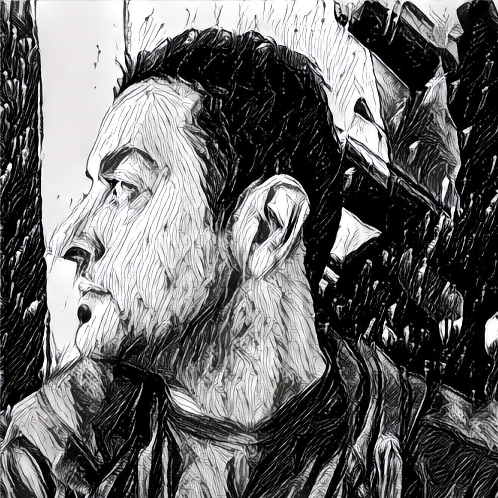

<link href="https://fonts.googleapis.com/css?family=Open+Sans" rel="stylesheet">
<style>
  body { font-family: 'Open Sans', sans-serif; }
  .videoWrapper {
	position: relative;
	padding-bottom: 56.25%; /* 16:9 */
	padding-top: 25px;
	height: 0;
}
</style>

<main>
  <canvas class="webgl"></canvas>
  <div class="pl-2 pr-2 column pt-6">
    <h1 class="h2">About</h1>
    <!-- <h2 class="h3">David Long</h2> -->

    

    <p>
      Hi!  My name is Dave and I can code!  I'm a software engineer and creative technologist based out of Los Angeles specializing in interactive Unity3d, C#, THREE.js, and iOS mobile development.  I'm also available for work in augmented/virtual reality, gaming, visualization, and interactive art installations.
    </p>
    <p>
      I experiment in computer vision, computational photography, visual effects, and drone videography.  My educational background includes work in computer science and traditional architecture.
    </p>
    <!-- <p>
      Game play programming skills I provide are prototyping, level design, NPC design, user interface design, game mechanic design, performance optimization, targeted platform builds with automation and testing, and integration with third-party services like payments, in app-purchase, ads, and analytics.
    </p>
    <p>
      When it comes to Unity, I'm familiar with nav meshes, shaders, cameras, effects, lighting, animators, audio, physics, raycasting, and inputs from touch, accelerometers, and game pads.
    </p>
    <p>
      Some Unity packages I use are PopcornFX, Substance Designer, Pro Camera 2D, DOTween Pro, Anti-Cheat Toolkit, and Text Mesh Pro.
    </p> -->
    <p>
      <!-- I'm also a Unity Certified Developer. -->
      <!-- Get <a href="/social">social</a> here. -->
    </p>
    <!-- <p>
      Distributed systems, native applications, and data visualizations. Industry experience in aerospace, media, entertainment, and video games. Interested in React, D3.js, Unity3d, data science, bots, IoT, smart cities, virtual + augmented reality.
    </p> -->
    <div class="pb-6 gap"></div>
  </div>
  <script src="https://cdnjs.cloudflare.com/ajax/libs/three.js/84/three.min.js"></script>
  <script>
  </script>
</main>
